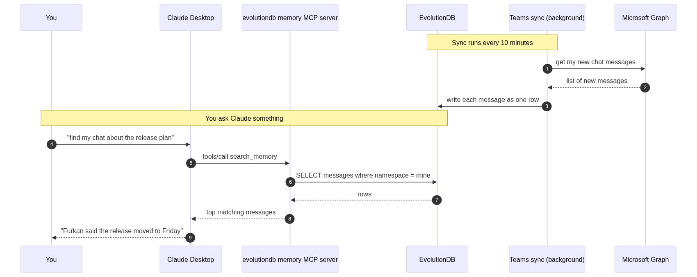

Make Claude search your Teams chats¶
You know the feeling. Three weeks ago you sent a Teams message about a release plan. Today you cannot find it. You scroll, you search by name, you search by a word you think you used. Nothing. So you ask the person again. They reply that yes, they said it, and you should know already.
This happens to me almost every week. I got tired of it. So I built a small tool that fixes it.
The tool reads my Teams chats and puts every message into a database. Claude can also read from that same database. When I want to find what someone said three weeks ago, I do not open Teams. I just ask Claude in plain language. It finds the message and answers.
It works very well, and the setup takes about ten minutes.
Why this matters more than it sounds¶
Teams keeps your messages forever. The real problem is finding them again. The built in search is okay if you remember the exact words. It is not good if you only remember the topic, or who said it, or roughly when.
When you cannot find a past message, you waste time in small ways that add up. You ask the same question twice. You miss a small detail that becomes important later. Every Monday morning you spend the first hour reading old chats just to remember where you were.
Here are some questions I now ask Claude without scrolling at all.
- What did Furkan say about the new release plan last week
- Find every chat where someone talked about the login bug
- What did I write in the standup yesterday about the migration
- Did anyone follow up on the budget meeting from two weeks ago
- Show me the design review notes I typed in chat after the meeting
- Pull out every action item from the platform team chat this month
Each of these used to take five to ten minutes of scrolling. Now it is one question and one short answer.
Where this helps the most¶
A few real places where this tool already saves me time.
Release management. Before we ship, I ask Claude to list every chat from the last two weeks where someone reported a bug or asked for a fix. It pulls the messages, groups them by chat, and tells me which items were closed and which were still open. I no longer keep a side document for this.
Meeting notes. Most of my team writes notes in chat after a meeting, not in Notion or Confluence. The notes are there, but you have to remember which chat. Now I ask Claude "find the notes from the architecture review last Thursday" and it finds them.
Catching up. After a holiday or a sick day, instead of reading two days of chat, I ask Claude what I missed. It summarises the important threads and skips the small talk.
Code reviews and decisions. Half of our technical decisions live in chat, not in PRs or design docs. I can now ask "why did we decide not to use Redis for sessions" and get the actual conversation where we made the call, with the reasons.
Onboarding. When a new person joins, instead of pointing at four years of chat history, I tell Claude to summarise our team's discussions on the topic they are starting on.
What you end up with¶
A small program runs in the background. Every ten minutes it asks Microsoft for any new Teams chat messages and writes each one into a database row. The database is EvolutionDB, an open source SQL engine that runs in a single Docker container.
Claude already knows how to talk to that database through the MCP standard. MCP is a small open protocol that any AI assistant can use to call tools. One of those tools reads from the same database the sync writes to. So the write path is Teams to database, the read path is Claude to database, and the database in the middle is the single source of truth.
No vector store. No second product. No sync queue. One file on disk.
How a question flows from start to finish¶
The diagram below shows what happens when you save a fact and later ask for it back. The same shape applies to a Teams message. The sync job writes one row, Claude reads it later.

The interesting part is that the same physical row serves both the write and the read. There is no eventual consistency window. There is no embedding job that has to finish first. The moment a Teams message is saved, Claude can find it.
Step one. Run the database¶
You only need Docker.
bash
git clone https://github.com/alptekin/evolutiondb.git
cd evolutiondb
docker compose up -d
That gives you EvolutionDB listening on two ports.
5433is the PostgreSQL wire port. The MCP server and any normal SQL client use this one.9967is the native EVO port. The bundled CLI and the C SDK use this one.
Check that it is alive.
bash
docker compose ps
docker compose logs evosql --tail 10
You should see lines like [PG] Listening on port 5433 and
[EVO] Listening on port 9967. That is the whole database. It
already has the memory and entity tables created and ready.
Step two. Install the Teams sync¶
The sync is a small Python package on PyPI.
bash
pip install evolutiondb-teams-sync
Then create a Microsoft Entra ID app for it. This is the part that takes the longest, but you only do it once.
- Go to https://portal.azure.com and open Microsoft Entra ID.
- App registrations, then New registration. Name it whatever you like, for example "EvolutionDB Memory Sync".
- Pick "Accounts in this organizational directory only".
- Leave the redirect URI empty. Save.
- Open Authentication and turn on "Allow public client flows". Save.
- Open API permissions and add three Microsoft Graph delegated
permissions.
Chat.Readlets the tool read your one to one and group chats.User.Readlets it see who you are.offline_accesslets it refresh the token without asking you to log in every time. - Copy the Application (client) ID and the Directory (tenant) ID from the Overview page.
Put those two values into a .env file next to where you will run
the sync.
bash
AZURE_TENANT_ID=your_tenant_id_here
AZURE_CLIENT_ID=your_client_id_here
EVOSQL_HOST=127.0.0.1
EVOSQL_PORT=5433
EVOSQL_USER=admin
EVOSQL_PASSWORD=admin
EVOSQL_DATABASE=evosql
MCP_USER_ID=your_unique_id
TEAMS_MEMORY_STORE=mcp_mem
The MCP_USER_ID is the namespace your messages are filed under.
Pick something stable like your work email or a short handle and do
not change it later.
Step three. Sign in once¶
bash
evosql-teams-sync --auth
The terminal prints a Microsoft login URL and a short code. Open the URL in any browser, paste the code, sign in with your work account, and click Accept on the permissions screen. The refresh token is saved on your machine and used for every later run.
You will not need to do this again unless you revoke the app or change accounts.
Step four. Pull your chats¶
Run a single sync to test that it works.
bash
evosql-teams-sync --once --since 24h
You should see something like
wrote 118 messages across 42 chats (skipped 11 system / empty)
That is your last day of Teams chats now sitting in EvolutionDB.
For real use, run it as a daemon so new messages are picked up every ten minutes.
bash
evosql-teams-sync --interval 600
Or, if you prefer, run it in Docker as part of the same compose
stack with the teams profile.
Step five. Point Claude at the database¶
Open Claude Desktop's config file.
On macOS
~/Library/Application Support/Claude/claude_desktop_config.json
On Windows
%APPDATA%\Claude\claude_desktop_config.json
Add the MCP server.
json
{
"mcpServers": {
"evolutiondb-memory": {
"command": "uvx",
"args": ["mcp-server-evolutiondb"],
"env": {
"EVOSQL_HOST": "127.0.0.1",
"EVOSQL_PORT": "5433",
"EVOSQL_USER": "admin",
"EVOSQL_PASSWORD": "admin",
"EVOSQL_DATABASE": "evosql",
"MCP_USER_ID": "your_unique_id",
"MCP_STORE_PREFIX": "mcp"
}
}
}
}
Two values matter here. The MCP_USER_ID must be the same one the
Teams sync writes under, otherwise Claude looks in the wrong place.
The port must be 5433, the PostgreSQL wire port. The MCP server
uses the psycopg library, which speaks PostgreSQL. Pointing it at
9967 is the most common mistake when something does not work.
Restart Claude Desktop fully. On macOS that is Cmd Q. Closing the
window is not enough. Open it again, start a new conversation, and
look at the bottom left of the window. You should see
evolutiondb-memory listed with a small green dot.
Step six. Ask things¶
Try a few real questions.
What did Furkan say about the release plan last week?
Find every chat where someone mentioned a login bug.
Summarise what I wrote in the Backend standup yesterday.
Did anyone follow up on the budget meeting from two weeks ago?
Claude calls the search_memory tool. The MCP server runs a SQL
query over your messages, scores them by how well they match your
question, and returns the top few. Claude reads them and answers.
Inspecting the data with normal SQL¶
This is the part I like the most. Because the data lives in a real database, you can query it directly.
bash
docker compose exec evosql /app/evosql-cli -W admin
Inside the CLI, count how many messages you have synced.
sql
SELECT COUNT(*)
FROM __mem_mcp_mem
WHERE mem_namespace = 'your_unique_id';
Find every message that mentions a topic.
sql
SELECT mem_value
FROM __mem_mcp_mem
WHERE mem_namespace = 'your_unique_id'
AND mem_value LIKE '%login bug%';
Drop a row you do not want stored.
sql
MEMORY DELETE FROM mcp_mem
WHERE NS = 'your_unique_id'
AND KEY = 'teams_chat_19_xxxxx_yyyy';
You can also connect with any PostgreSQL client. DBeaver, pgAdmin, the SQL pane in your editor, anything that speaks the PostgreSQL wire protocol works.
Backup is one line.
bash
docker cp evolutiondb-evosql-1:/data/evosql.db ./teams-memory-backup.db
That single file is your entire searchable Teams history.
Common things that go wrong¶
Wrong port. If Claude says the MCP server is not responding, it
is almost always because the port is 9967 instead of 5433. The
MCP server uses PostgreSQL wire.
Restart, not relaunch. Claude Desktop reads the MCP config only
when the app starts. After editing the config, fully quit the app
with Cmd Q and open it again.
MCP_USER_ID mismatch. If the Teams sync writes under one namespace and Claude reads from another, your messages will not show up. Use the same value in both places.
Tenant admin lock. If your company blocks the Chat.Read
permission, you cannot sync chats with this tool. Try running the
auth step first. If it fails with a tenant admin error, talk to your
IT team.
Where this goes next¶
Once your data lives in a real database that Claude can query, the assistant is no longer guessing. It is reading.
The same pattern works for any other source you can pull into rows.
- A Gmail connector that writes every email you receive.
- A Slack archiver that writes every public channel message.
- A GitHub watcher that writes every PR comment you are tagged in.
- A meeting transcript pipeline that writes every Zoom or Meet call.
All of them write into the same database. Claude reads from the same database. You do not run a vector store, a document database, a queue, and a SQL database to make this work. You run one engine.
That has been the biggest change for me. The assistant stopped being something I had to re explain my context to every morning. It became something that already knows what I said yesterday, what we discussed last week, and what we decided last month. The papercut is gone.
If you try this, I would love to know what use case you find for it that I have not thought of yet.
The full source code for the database, the MCP server, and the Teams sync lives at github.com/alptekin/evolutiondb.